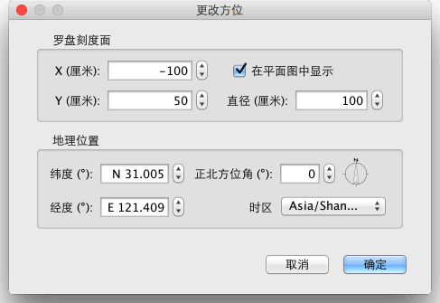

| 自定义义指南针(或罗盘)和地理位置 | |||
每个新家展示有一指南针(或罗盘)在平面图的左上角，如下图所示，选择罗盘后， 可旋转或上下左右操作移动,或者键盘箭使用上下左右键移动。 当罗盘被提升改变时 仅 会在平面图中被选择, 你可以旋转它或者变换有它的指北方向。
|

|
当鼠标指针是在这些指标之上时，它改变表明你能拖住并且下降那个点。  在罗盘上, 您可以改变 位置、 直径、指北方向和设定在平面图中的季节天气，来设定太阳的阴影(例如太阳直射北半球，表是北半球是夏天，反之，太阳在南半球，表是北半球是冬天， 随着太阳在北回归线至南回归线间游走，就可判断当地的季节，一般北台湾都是太阳由东南方(或西南方)斜射过来的，而南台湾在夏天太阳走到北回归现时， 才有可能稍微斜射过来)、为表示阴影，你也可以选择纬度和家的地理位置间经度和它的地区的时区。 |